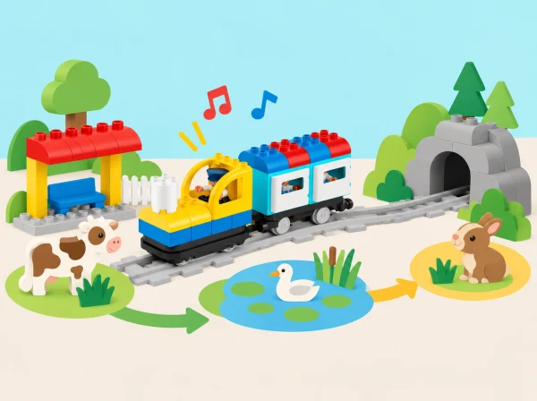

Històries que viatgen en tren
🏷️ Seqüències, sons i relats
🌱 Situació, repte i intenció
🎯 Aprenentatges i vocabulari
- Ordenar esdeveniments i instruccions perquè una altra parella puga reconstruir un relat.
- Anticipar el resultat d’una seqüència i contrastar-lo amb el recorregut del tren.
- Associar sons o parades amb esdeveniments sense confondre una representació amb una dada científica.
- Revisar una història perquè es puga repetir i comunicar les decisions preses per l’equip.
🧰 Materials i preparació
Prepareu Coding Express amb via, locomotora, vagons i blocs d’acció disponibles; targetes amb imatges, objectes menuts i un espai tranquil per escoltar sons. Comproveu quines funcions de so ofereix el vostre set i no pressuposeu una funció que no hi siga: quan calga, una persona pot fer el so o es pot usar una targeta. Els relats són inventats i no necessiten pantalles ni enregistraments.
📅 Seqüència didàctica
Cada sessió adapta una lliçó de la unitat oficial d’introducció a la seqüenciació. L’ordre manté la progressió de recordar, planificar, associar sons, reconéixer repeticions i comunicar un relat complet. Ajusteu el temps de presentació segons el grup; no cal acabar totes les proves en una mateixa sessió.
Memòria de les parades · Memory Game (40 min)
Fase 1 · Activem i prediem
Prepareu una seqüència de tres imatges conegudes —estació, jardí i font, per exemple— i mostreu-la durant uns segons. Abans d’amagar-la, convideu el grup a anticipar quina imatge serà més fàcil de recordar i per què.
Fase 2 · Explorem i construïm
Amagueu la seqüència i reconstruïu-ne l’ordre amb targetes. Si el grup està preparat, feu una segona ronda amb quatre targetes.
Fase 3 · Expliquem i registrem
Pregunteu quina estratègia ha ajudat a recordar: repetir en veu baixa, agrupar dues imatges o associar-ne una amb una acció. Traslladeu una seqüència a la via com a parades d’una història.
Fase 4 · Apliquem i millorem
Demaneu a una altra parella que reconstruïsca l’ordre abans de posar el tren en marxa. Compareu la seqüència recordada amb l’original i reviseu les pistes o agrupacions que podrien fer-la més clara.
Fase 5 · Comprovem i reflexionem
El primer viatge · First Trip (40 min)
Fase 1 · Activem i prediem
Dibuixeu una estació d’eixida i una destinació del barri o del paisatge local, com l’horta, una biblioteca o una parada del mercat. Cada persona prediu on quedarà el tren i quina acció indicarà la parada, basant-se en peces que el grup haja comprovat.
Fase 2 · Explorem i construïm
Construïu un trajecte curt amb els materials reals del kit i una figura passatgera. Abans d’usar el tren, representeu les accions necessàries amb targetes, fletxes o gestos: eixir, avançar, arribar.
Fase 3 · Expliquem i registrem
Representeu el pla en un mapa i descriviu en quin ordre apareixen les accions. Una altra parella pot intentar explicar el procediment abans de la prova.
Fase 4 · Apliquem i millorem
Executeu el viatge i compareu-lo amb el pla. Si la destinació no s’assoleix, localitzeu l’últim punt correcte i canvieu una sola instrucció o peça. Repetiu i demaneu a una altra parella que descriga el procediment.
Fase 5 · Comprovem i reflexionem
Un tren amb veu · Train Sound (40 min)
Fase 1 · Activem i prediem
Trieu tres esdeveniments d’una història pròpia i anticipeu quin so o senyal podria representar cadascun: activitat del mercat, pluja sobre una teulada imaginària, un ocell del conte o un avís d’arribada.
Fase 2 · Explorem i construïm
Associeu a cada esdeveniment una targeta i un so breu. Feu una llegenda visual so-esdeveniment i practiqueu la seqüència amb la veu, un instrument suau o un gest. No imiteu sons d’animals com si foren identificacions científiques ni enregistreu participants.
Fase 3 · Expliquem i registrem
Anoteu l’ordre de tres esdeveniments i què representa cada so. Si l’app no ofereix una funció adequada, una persona pot fer els sons en directe mentre una altra condueix, o podeu substituir-los per pictogrames.
Fase 4 · Apliquem i millorem
Si el set i l’app disponibles tenen una funció sonora adequada, proveu-la i compareu-la amb la representació humana. Registreu què és propi del tren i què és una decisió artística del grup.
Fase 5 · Comprovem i reflexionem
Una cançó que es repeteix · Are You Sleeping? (40 min)
Fase 1 · Activem i prediem
Escolteu o reciteu una cançó coneguda pel grup amb una frase que torne. Pregunteu quina part espereu tornar a sentir i quina part podria canviar.
Fase 2 · Explorem i construïm
Marqueu les parts amb símbols: A per al fragment repetit i B per a la part que canvia. Si cap cançó compartida és adequada, creeu una tornada original amb paraules o pictogrames.
Fase 3 · Expliquem i registrem
Ordeneu les targetes i expliqueu què vol dir que un fragment «torna». Representeu la forma amb una partitura visual A/B.
Fase 4 · Apliquem i millorem
Representeu la forma amb una ruta curta, figures o una seqüència de maons compatibles amb la dotació; no pressuposeu que Coding Express té una ordre de bucle programable. Compareu dues versions on només canvia una estrofa.
Fase 5 · Comprovem i reflexionem
Viatge per veure animals · Trip to See Animals (40 min)
Fase 1 · Activem i prediem
Trieu tres animals mitjançant imatges o figures i imagineu una visita respectuosa a una exposició de natura feta de paper. Parleu de mirar sense molestar ni capturar animals i de distingir un animal real d’un personatge inventat.
Fase 2 · Explorem i construïm
Creeu una narració amb inici, dues parades i final. Per a cada parada, decidiu què descobreix el personatge i quina imatge, frase, gest o so la representa.
Fase 3 · Expliquem i registrem
Ordeneu el recorregut en un mapa i feu una predicció de la seqüència. Presenteu-lo a un altre grup sense explicar-li abans l’ordre; els oients reconstrueixen la història amb targetes i indiquen quin indici els ha ajudat.
Fase 4 · Apliquem i millorem
Reviseu el mapa o el relat si una parada no s’entén i torneu a provar-lo. Incorporeu un comentari del públic o expliqueu per què decidiu no adoptar-lo.
Fase 5 · Comprovem i reflexionem
🧪 Evidències i avaluació
Guardeu una evidència de cada lliçó: seqüència de memòria, primer pla de ruta, llegenda sonora, patró repetit i mapa narratiu final. Observeu si l’alumnat:
- ordena tres o més esdeveniments i pot explicar o mostrar una pista que l’ha ajudat;
- anticipa el resultat d’una seqüència i localitza on cal revisar-la després d’una prova;
- associa un so, gest o símbol a un esdeveniment del relat;
- identifica un fragment que es repeteix sense confondre’l amb una ordre de bucle del robot;
- comunica un procediment perquè una altra persona el puga reconstruir.
Una ruta diferent és vàlida si el relat es manté comprensible i l’equip pot justificar les decisions. Registreu observacions breus durant les converses, no sols el producte final.
♿ Participació, accessibilitat i seguretat
Feu servir pictogrames grans, recorreguts amb poques parades i anticipació visual dels canvis de so. Oferiu rols de narració, ordenació, moviment del tren, observació i registre del mapa. Es pot respondre parlant, assenyalant, triant imatges, amb comunicació augmentativa o dictant a una companya. Si els sons són una barrera, substituïu-los per símbols o gestos acordats; si el moviment del tren distreu, primer representeu tota la seqüència a taula amb fitxes.
Deixeu que cada participant trie si vol presentar en grup gran o fer una demostració a una sola parella.
🔗 Referents i adaptació
Adaptació de les cinc lliçons de Introduction to Sequencing: Memory Game, First Trip, Train Sound, Are You Sleeping? i Trip to See Animals. Es conserven els objectius d’ordenació, anticipació, so i narrativa; els escenaris, instruccions, proves i il·lustració són originals i s’ajusten als materials reals del kit.